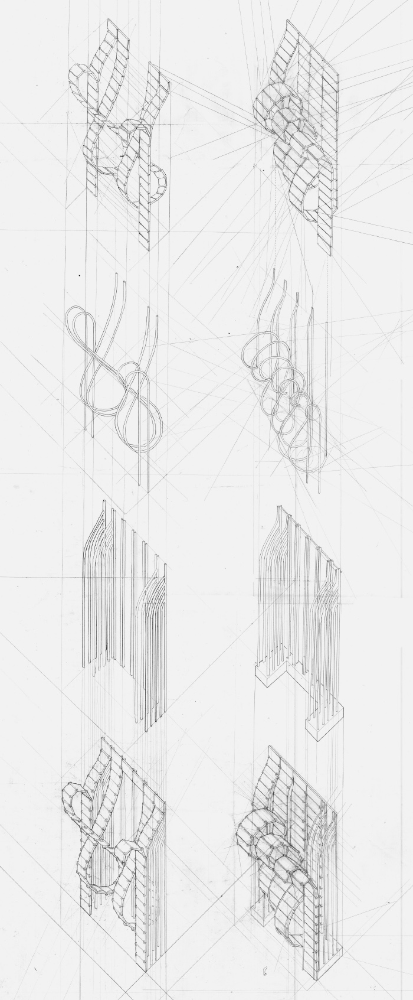
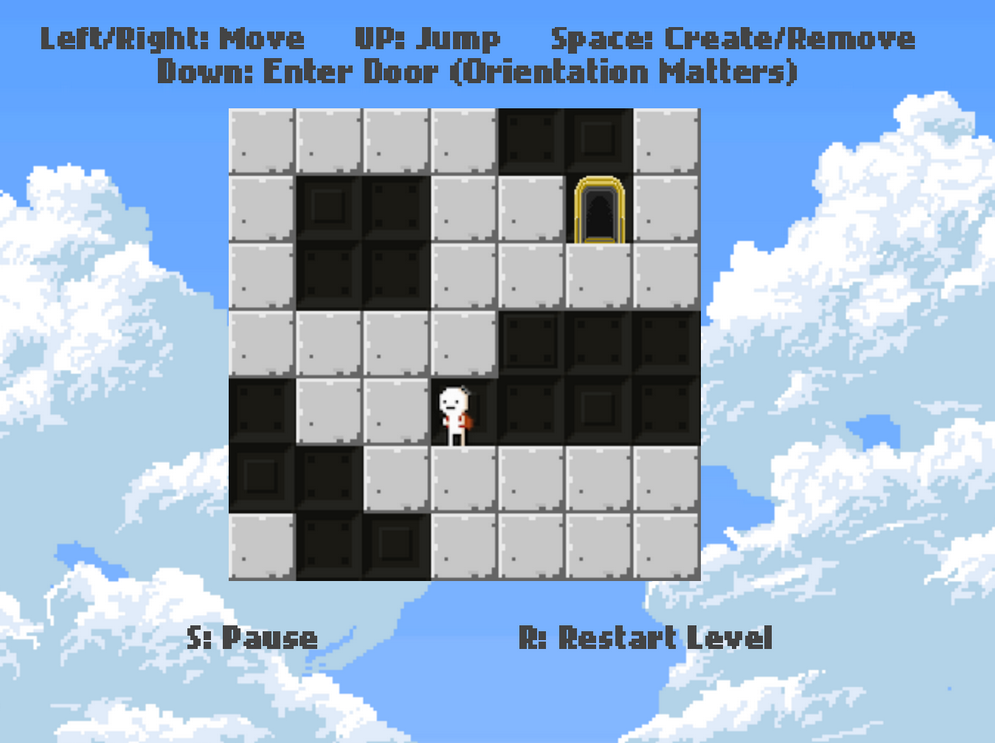
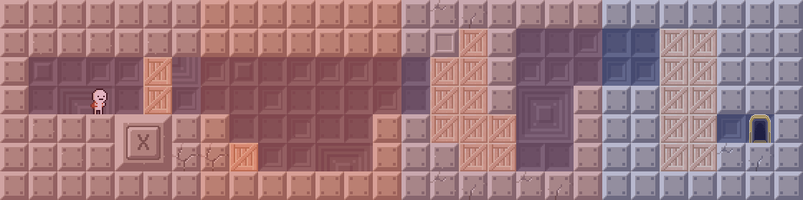
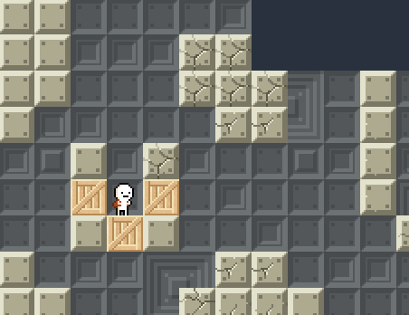
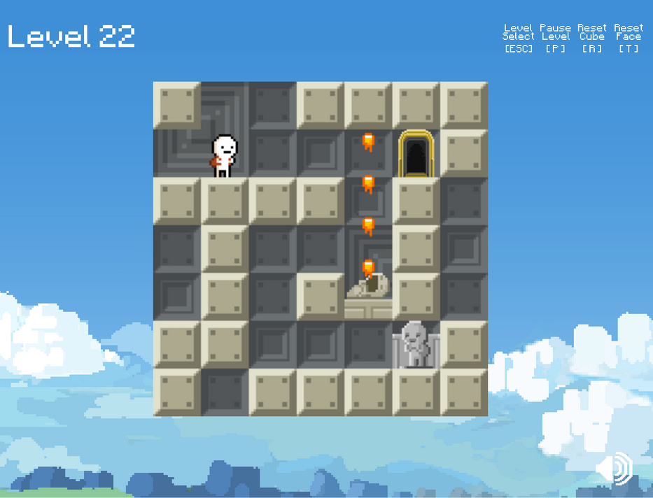

[Body]/[Armor]
I started college as an architecture major.
.
Supervised by Prof. Jim Williamson and Prof. Val Warke.
.
Lol I'm not really sure about that. The chest protector was reconstructed in a series of iterations. Through this process the body started to become a metaphor for site; armor started to become a metaphor for architecture. The clearly defined hierarchical components of the armor (padding, foam, stitching, plastic covering) began to inform
.
Lol I'm not really sure about that. The chest protector was reconstructed in a series of iterations. Through this process the body started to become a metaphor for site; armor started to become a metaphor for architecture. The clearly defined hierarchical components of the armor (padding, foam, stitching, plastic covering) began to inform
.
Lol I'm not really sure about that. The chest protector was reconstructed in a series of iterations. Through this process the body started to become a metaphor for site; armor started to become a metaphor for architecture. The clearly defined hierarchical components of the armor (padding, foam, stitching, plastic covering) began to inform
Reassembly
The earliest phase involved a systematic dissection of the object. Focus was on subverting the way the object had been constructed.
The chest protector was reconstructed in a series of iterations. Through this process the body started to become a metaphor for site; armor started to become a metaphor for architecture. The clearly defined hierarchical components of the armor (padding, foam, stitching, plastic covering) began to inform architechtonic elements as site, structure, superstructure and membrane.
Reassembly
The earliest phase involved a systematic dissection of the object. Focus was on subverting the way the object had been constructed.
The chest protector was reconstructed in a series of iterations. Through this process the body started to become a metaphor for site; armor started to become a metaphor for architecture. The clearly defined hierarchical components of the armor (padding, foam, stitching, plastic covering) began to inform architechtonic elements as site, structure, superstructure and membrane.


Redux
Suprise: playtesters grasped the concept of moving across the edges of a rotating cube fairly quickly.
Early on, we played with mechanics like spikes and player-created boxes. The spikes were eventually cut, because we wanted players to explore without fear of impalement. The boxes however, stayed: they added a layer of complexity in that the player was actively shaping the level.
More interestingly, the paper prototype revealed that at larger level sizes, players began to lose sense of orientation and position within the box. 7*7 was determined to be a size small enough so that player could remember spatial configurations , yet large enough to allow for interesting, varied level design.
As we iterated, we would throw entire levels out the window and make huge revisions on others if they didn't work.
There was a huge push for level design early on. All team members ideated on sets of levels we could use at various points in the game. We didn't want to create a tutorial. Rather, we hoped to
introduce mechanisms as well as the spatial orientation aspect of the game through a series of increasing challenging levels.
There was a huge push for level design early on. All team members ideated on sets of levels we could use at various points in the game. We didn't want to create a tutorial. Rather, we hoped to

Level Design
There was a huge push for level design early on. All team members ideated on sets of levels we could use at various points in the game. We didn't want to create a tutorial. Rather, we hoped to introduce mechanisms as well as the spatial orientation aspect of the game through a series of increasing challenging levels.
As we iterated, we would throw entire levels out the window and make huge revisions on others if they didn't work.
Prototyping


The first prototype was a scramble to get the core functionality down. It was released to our friends with 23 levels that we had placed in (supposedly) increasing difficulty.
Prior to release we decided on which analytics we were going to log. These included: number players who finish each level, time spent on each level, time spent on each box face number of actions (key press=action) logged on each level, etc.
A few hundred friends played the prototype (thank you Facebook). Having recorded thousands of values across different fields from our friends into a database, we created a series of data visualizations to see where they were having the most trouble. An average time spent on each level is shown above.
Surprise: generally, levels did get more difficult. But, it was obvious the early levels were way too easy, and some levels were near impossible. We went back to the impossible levels and looked at a combination of level-specific data and real people playing through the level, to find out where we went wrong.
Stumbling Blocks
A huge challenge that stuck with us throughout different prototypes was: what is the best way to teach a game mechanic. Game mechanics are learned through repetition but what about the first time that mechanic is introduced?
In the above level, the player is required to build a block to jump on after they fall in the small pit.
Collecting player analytics allowed us to we overlay heatmaps on all levels; red (warmer) signifies more time spent on a face. In the level above, players were spending a disproportionate amount of time on the second face; they weren't learning the new mechanics, despite our efforts to display them on various parts of the screen.
Solutions


At this point we knew we had to seamlessly incorporate the mechanism instructions into the gameplay. After exploring a few possible solutions, I designed and implemented a series of text bubbles that would appear when a player was confronted with a challenge for the first time, or they took too long completing a challenge.
Data collected from A/B testing revealed less time spent on each level, and a smaller player fall off rate per level, when the thought bubbles took the place of the control displays we had previously.

BOX! can be played on Kongregate. We are still tweaking the game, so C&C is very appreciated!